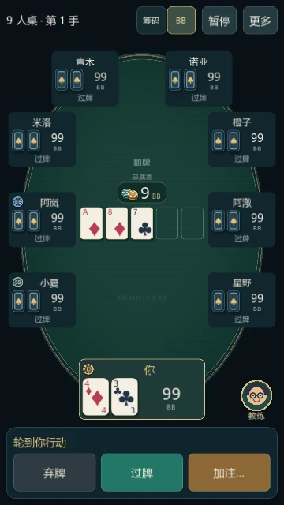
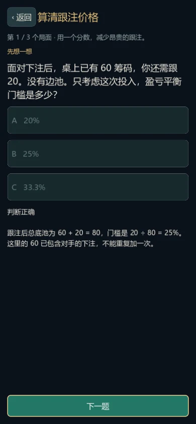

从两个人，到整张桌
2–9 人随心选择。逐座位配置名字、三档难度和激进程度；用 BB 或筹码下注，常用尺寸一点填入。

SOMNICARD
先享受一场好牌局
2–9 人随心选择。逐座位配置名字、三档难度和激进程度；用 BB 或筹码下注，常用尺寸一点填入。
本地电脑随时开局，名字、难度和风格可分别配置。内置三档电脑的本地实测数据，了解不同档位的表现。
关键行动配合轻量音效。可以关闭教练、音效和动效，按自己的习惯练习。

把经验变成理解
按当时可见的信息估算权益、跟注门槛和对手范围。建议与牌桌同屏，不用在多个界面之间来回切换。
用牌局 ID、收藏、标签和筛选找到记录，逐步回放每轮下注。从关键决策重新打一次，观察不同选择。
8 个课程主题、24 个决策问题。学习牌型、位置、赔率、下注与范围，再进入主题训练。进度保存在本机。
对计算保持诚实
离线教练使用抽样权益与行动范围推断。高级策略分析限定双人河牌的抽象范围和下注树，提供参考频率与模型 EV；不宣称覆盖完整多人 GTO，也不保证盈利。
本地电脑的难度与风格分开配置；游戏内可查看本地实测数据。
教练分析、牌型判断、合法下注和结算均由本地程序完成。
准备好下一手
正在读取版本信息…
下载 Android APK ↓Android 7.0 及以上 · 64 位 ARM / x86 · 需要 OpenGL ES 3.0
无需注册，全部游戏功能均可离线使用。
下载停在末尾时先查看浏览器下载列表。不要同时反复下载多个文件；重试前确认空间充足，必要时换浏览器或网络。
版本元数据加载后显示文件大小、校验值与签名信息。
下载 SHA-256 校验文件2.0 新增学习路线、主页学习进度、分层帮助与隐私说明、音效与震动设置、省电模式，并修复安卓反复切回牌桌的渲染问题。原有对战、复盘、训练、本地电脑和本地策略分析继续保留。
开始前的小问题
可以。本地对手、完整牌局、课程、训练、历史复盘和本地教练都可离线使用。游戏不联网。
游戏没有账号、广告和自动遥测。设置、牌局与学习进度保存在设备上。网页不使用统计脚本和第三方字体；提供网页和下载的服务器/CDN 可能记录常规访问日志。
导出的备份包含完整牌局和隐藏底牌，请妥善保管。卸载前先备份；设备设置和正在进行的普通牌桌不包含在学习备份中。
这是个人德州扑克练习产品，使用虚拟筹码，不提供现金下注、充值、提现或真人联网牌桌。本版不包含锦标赛赛制。
在游戏首页打开“帮助与关于 → 复制诊断摘要”，补充操作步骤、预期结果、实际结果和截图，交给向你提供本页面的开发者。摘要不包含牌局内容。当前未提供自动上传或内置客服。
如果问题与某手牌有关，可附牌局 ID。分享完整备份前请检查其中的私人信息。